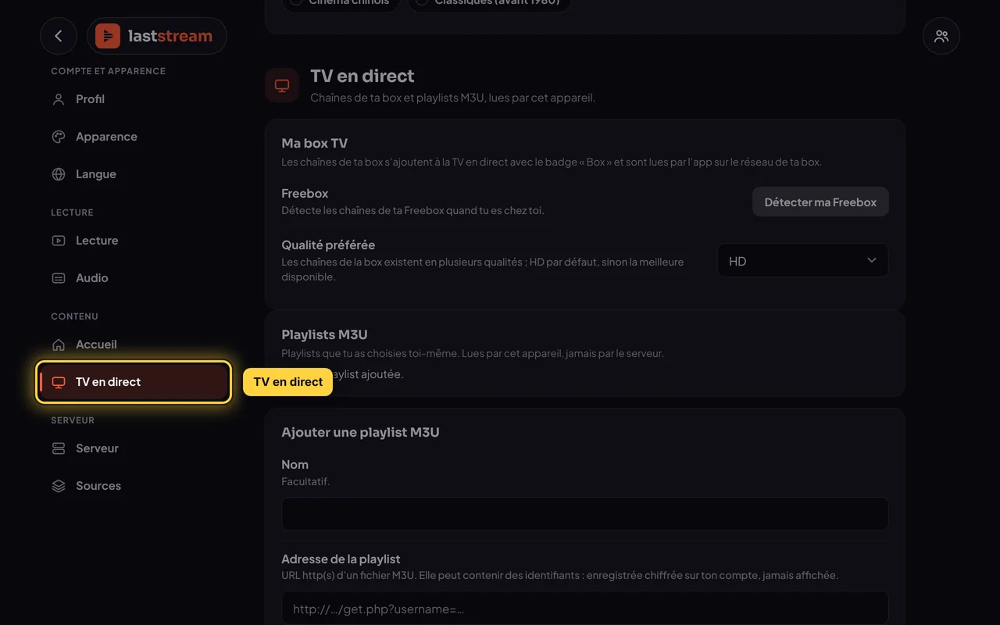
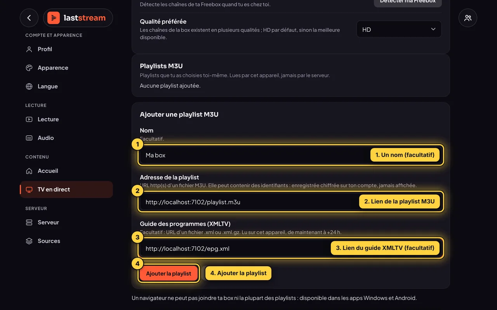
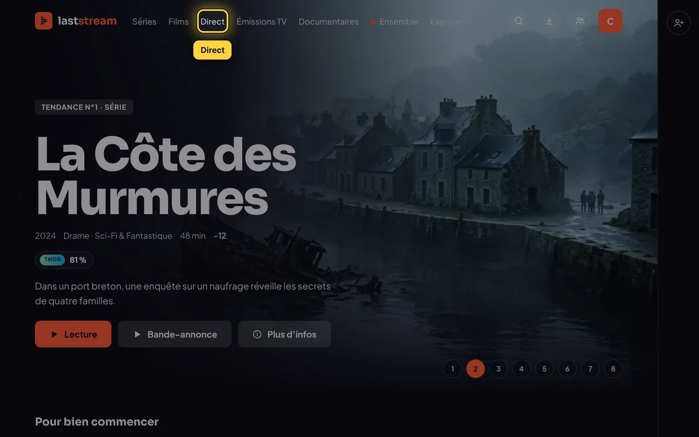
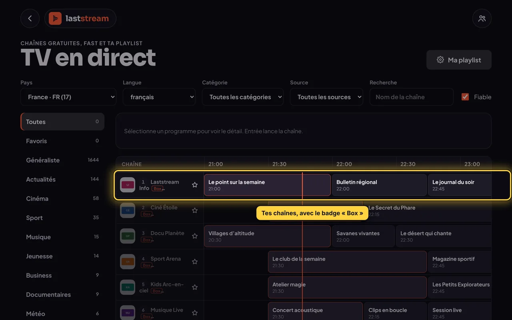
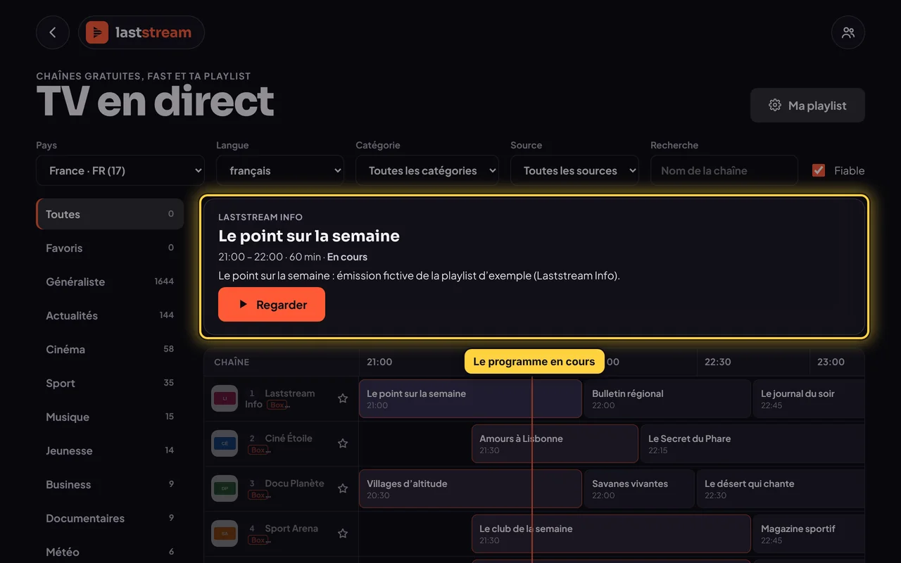

Prérequis
- L’app Windows ou Android : un navigateur ne peut pas joindre la plupart des playlists.
- L’adresse de ta playlist M3U (et, si tu l’as, celle du guide XMLTV).
Étapes
Sur chaque capture, le cadre jaune montre où toucher ou cliquer ; les numéros donnent l’ordre.
-
Touche ton avatar, puis « Réglages », puis « TV en direct » dans la colonne de gauche.

-
Dans « Ajouter une playlist M3U », renseigne un nom (1, facultatif), l’« Adresse de la playlist » (2) et, si tu l’as, le « Guide des programmes (XMLTV) » (3,
.xmlou.xml.gz).Touche « Ajouter la playlist » (4). Tu peux aussi « Importer un fichier »
.m3udepuis l’appareil.
-
Quand le message « … chaînes ajoutées, guide à jour » s’affiche, reviens à l’accueil et ouvre l’onglet « Direct ».

-
Tes chaînes apparaissent avec le badge « Box », avec leurs programmes. La colonne de gauche filtre par catégorie.

-
Touche un programme pour voir sa fiche, puis « Regarder ».

Format attendu
#EXTM3U
#EXTINF:-1 tvg-id="chaine1.fr" tvg-name="Chaîne 1" tvg-logo="https://exemple.com/logo1.png" group-title="Généralistes" tvg-chno="1",Chaîne 1
https://exemple.com/live/chaine1.m3u8La première ligne doit être #EXTM3U. Chaque #EXTINF est suivi de l’adresse du flux (http, https, rtsp, rtp ou udp). group-title donne la catégorie, tvg-chno le numéro (1 à 9999), tvg-id fait le lien avec le guide XMLTV.
| Limite | Valeur |
|---|---|
| Taille d’une playlist | 20 Mo |
| Délai de chargement | 20 s |
| Actualisation automatique | toutes les 24 h |
| Playlists par compte | 20 |
| Guide des programmes | de maintenant à +24 h |
Si ça ne marche pas
- « Cette adresse ne renvoie pas une playlist M3U. » → l’adresse pointe vers une page web ou un fichier d’un autre format.
- « Aucune chaîne trouvée dans cette playlist. » → fichier vide ou mal formé.
- « Adresse injoignable » → vérifie l’adresse et ta connexion (et le réseau de ta box pour une Freebox).
- Dans un navigateur → un navigateur web ne peut pas joindre la plupart des playlists : utilise l’app Windows ou Android.